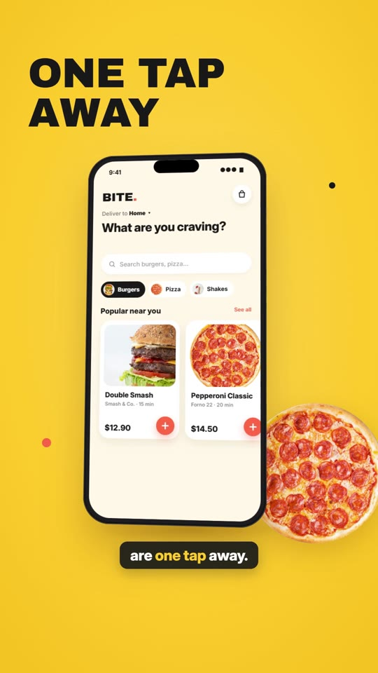
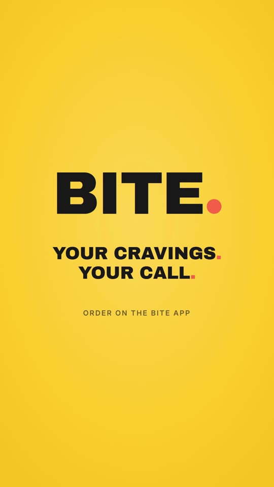

← All work
App promo
Bite
An 18-second vertical promo for a fictional food delivery app: a craving, one tap, a rider tracked across a 3D map and the bag landing at the door.
Format18s · 9:16
RoleConcept, design, animation, sound
BriefSelf-initiated
Year2026
The brief
Make ordering food feel instant. One craving, one tap, a map that moves and dinner at the door, in 18 seconds, warm and bright, and readable with the sound off.
My role
Concept, design, animation, sound.
Self-initiated brief: Bite is a fictional project made for this portfolio.
Process
Styleframes




